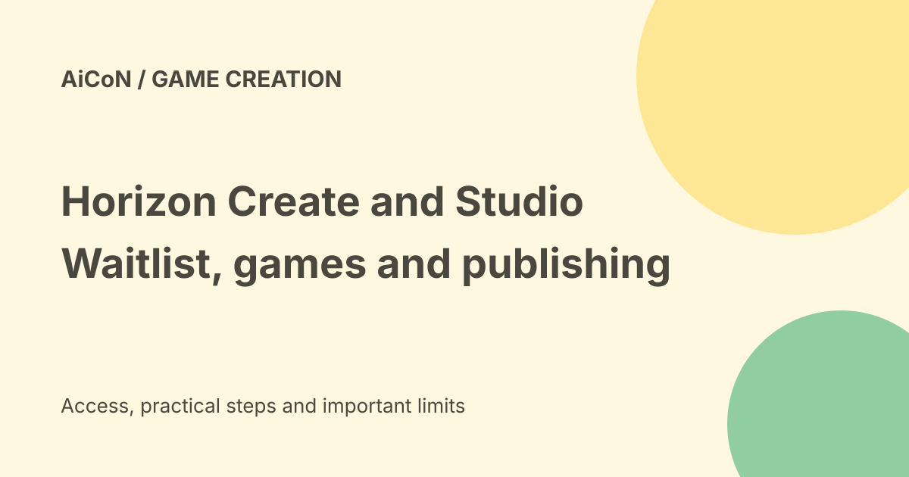

Horizon Create and Studio: game building, waitlist and publishing limits
Meta describes Horizon Create as a phone app and Horizon Studio as a browser workspace for building 2D and 3D mobile games using ordinary text prompts. Early access is rolling out gradually through a waitlist. The announcement does not establish immediate access in India, a public price or guaranteed distribution to players.

What are these tools?
Both use the creation capabilities of the Meta Horizon Engine. Meta says a prompt can produce a game with characters, art, progression, difficulty and multiplayer systems.
This is the company's product description. A generated game still needs testing. A playable first result is not proof that the rules, controls and performance meet your goals.
Horizon Create on a phone
Create is described as a standalone mobile app. Start with an idea or a template, then ask for changes to the art style, story, characters and progression.
Meta says you can run multiple projects and receive a notification when a build is ready to test. That description is not a verified device-compatibility list or an unlimited usage allowance.
Horizon Studio in a browser
Studio combines text prompting with visual editing. The announcement lists scene arrangement, asset replacement, script-parameter changes and manual layout control.
Meta says no gaming PC is required. Browser access still needs an accepted account and a suitable device and connection. Do not treat the announcement as an offline editor.
Moving between phone and web
Meta says projects transfer between Create and Studio, including assets, systems and iteration history. You can also begin in Studio without an existing game.
Before relying on that handoff, test a small project in your actual accepted account. No project was created or transferred for this guide.
Early access and India
The official announcement directs readers to an early-access waitlist. It says the tools are in testing with the creator community and access will expand gradually.
The checked public pages do not confirm a specific Indian opening date, every eligible device or an instant invitation. The waitlist is an expression of interest, not a guaranteed place or launch date.
Is it free?
No public price or permanent free allowance was established in the checked announcement and waitlist route.
Do not advertise the tools as free forever. When access arrives, inspect account terms, generation limits, publishing requirements and any charges before starting a larger project.
Publishing is not guaranteed reach
Meta says publishing makes a game eligible for native distribution across Facebook, Instagram and Horizon. Eligibility is different from guaranteed promotion or a promised number of players.
The announcement says engagement, stability, cultural relevance and repeat play affect discovery. A large platform audience is not your game's forecast audience.
Review and age ratings
Meta describes generated-content safety checks, review before publishing and distribution, automated age ratings and age-appropriate tiers.
Those systems do not replace your own checks for harmful content, confusing controls, unsuitable interactions or rights in uploaded material. Build for the age group you actually intend to reach.
Monetisation remains a separate question
The announcement mentions in-game monetisation and the Meta Horizon Creator Fund, while saying more details on monetisation options will follow.
It does not establish that every Indian creator qualifies, receives funding or earns money. Check the specific programme's current terms before making a business plan.
A careful first project
- Open the official announcement and waitlist route.
- Read eligibility and access terms before sharing details.
- Wait for accepted access rather than buying an invitation from someone else.
- Choose a small, low-risk game idea.
- Write clear rules, controls and a target age group.
- Test the generated game before asking for more features.
- Review assets, rights, difficulty and multiplayer behaviour.
- Check publishing review and actual usage limits.
- Publish only a version you have tested.
No waitlist form, account, build or publishing action was completed here.
What changed since the original post?
We keep the early-access warning and add clear boundaries around cost, device access, distribution, safety review and monetisation. The official claim of a complete game should not be read as a promise that it is ready for players without testing.
Frequently asked questions
Can everyone in India use it now?
That was not confirmed by the checked public pages.
Does publishing guarantee players?
No. It makes the game eligible for distribution.
Was a game built for this guide?
No.
Sources: Meta announcement and product boundaries · Official early-access route. Checked 7 October 2026.